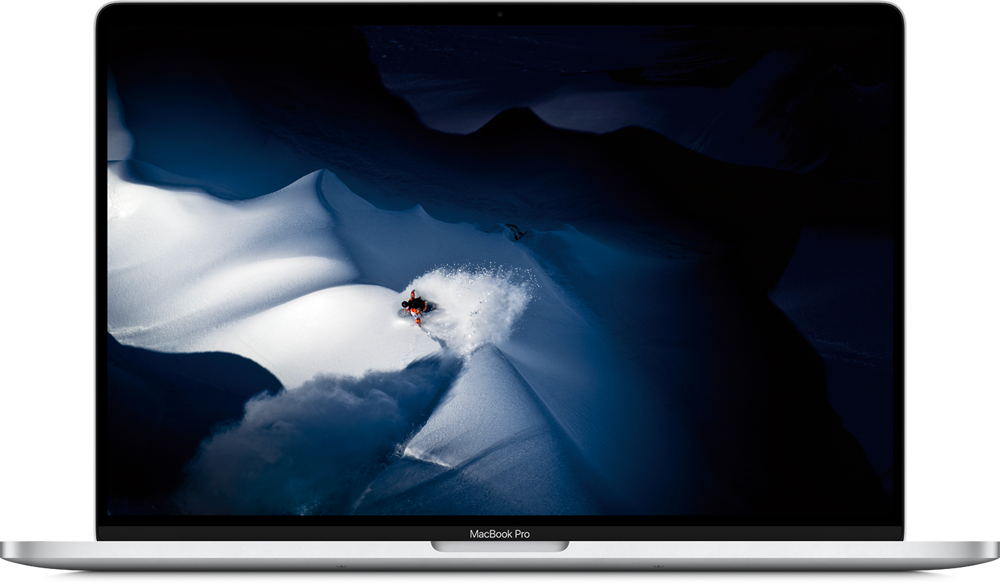

elementary os
La alternativa a Windows y a macOS rápida, libre y respetuosa con la privacidad
Pague lo que desee:
elementary OS 5.1.7 «Hera» | 1,49 GB
Especificaciones recomendadas para el sistema

Pagos procesados y protegido por stripe
Consígalo en el Centro de aplicaciones
Obtenga aplicaciones gratuitas y de pago en el Centro de aplicaciones, la tienda donde el usuario decide la cantidad a pagar a desarrolladores independientes. Cada aplicación ha sido revisada por elementary para asegurar una experiencia nativa, segura y respetuosa con la privacidad.
Productividad y diversión al máximo
Eleve su productividad y concentración con la vista multitarea, el modo minipantalla y la función No molestar. O elimine toda notificación del trabajo mientras ve vídeos o juega.
Vista Multitarea
Las áreas de trabajo le ayudan a organizar sus pendientes. Mantenga el trabajo y el ocio separados, pero accesibles con solo una pulsación.
Modo Minipantalla
Trátese de una película, un juego o un proceso del terminal, el modo minipantalla le permite estar al tanto de una cosa mientras trabaja en otra.
No Molestar
Apártelo todo y conserve su concentración en el trabajo, o mantenga a raya todas las notificaciones mientras mira una película. El modo No molestar interrumpe la emisión de notificaciones.
Tres modos de Exploracion
Cuadricula
Navegue por sus aplicaciones y encuentre la que busca en la cuadrícula alfabetizada.
Categorias
Vea las aplicaciones organizadas por categorías: algo perfecto para grandes colecciones de aplicaciones.
Busqueda
Abra aplicaciones y paneles de configuración, ejecute órdenes… todo ello y mucho más mediante la vista de búsqueda ultrarrápida.
Controles de Padres
Tiempo ante pantalla
Establezca límites de tiempo según el usuario para los días de la semana, fines de semana o ambos.
Uso de internet
Gestione las páginas web permitidas. Las reglas afectan a todas las aplicaciones para el usuario, incluso si se utiliza un navegador web diferente.
Gestione las aplicaciones
Elija qué aplicaciones son seguras para que accedan los más pequeños. Opcionalmente también puede permitir el acceso con su contraseña.
Fáciles de usar. Ideales para un uso eficiente del teclado.
elementary OS está diseñado para que sea fácil de entender y de usar para el nuevo usuario. Esto no quiere decir que sea limitado; los potentes y personalizables atajos de teclado garantizan mantenerse productivo, ya sea el primer o el enésimo día que usa elementary.